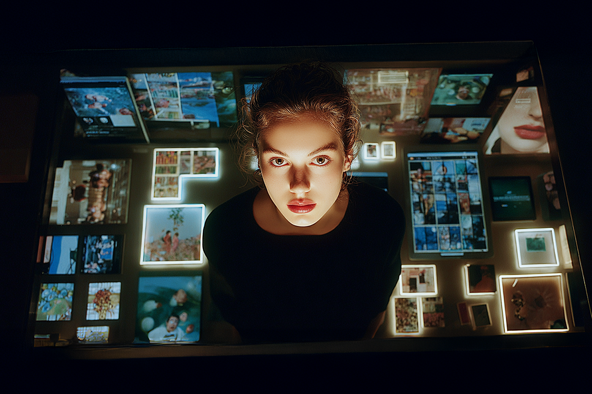
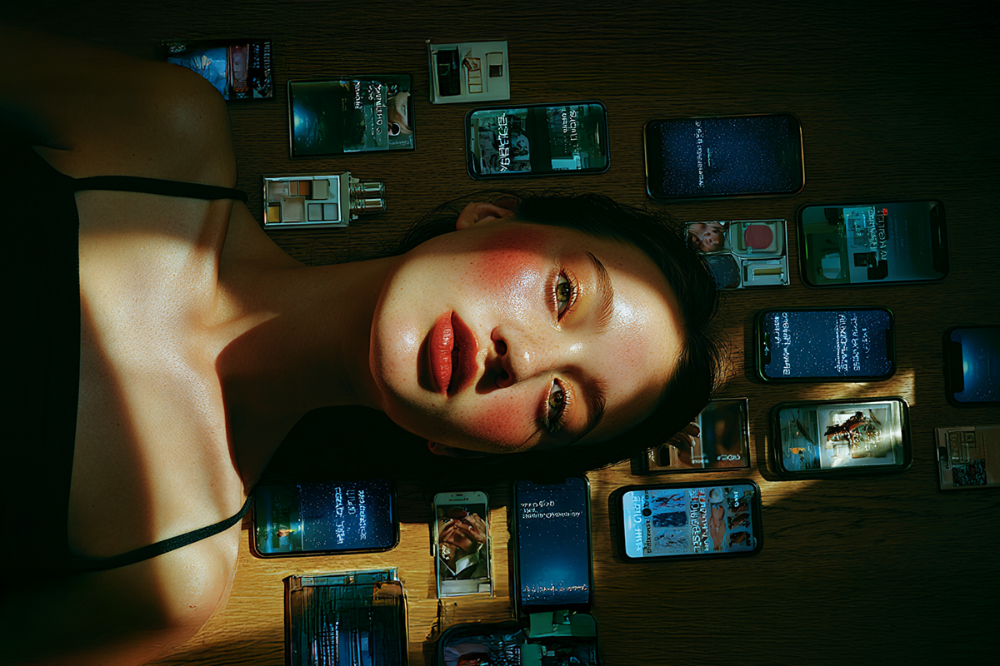
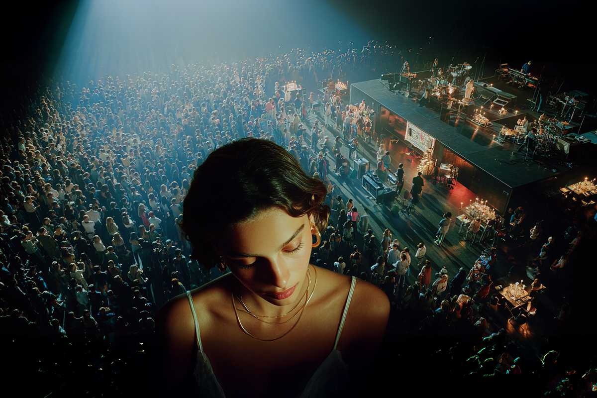
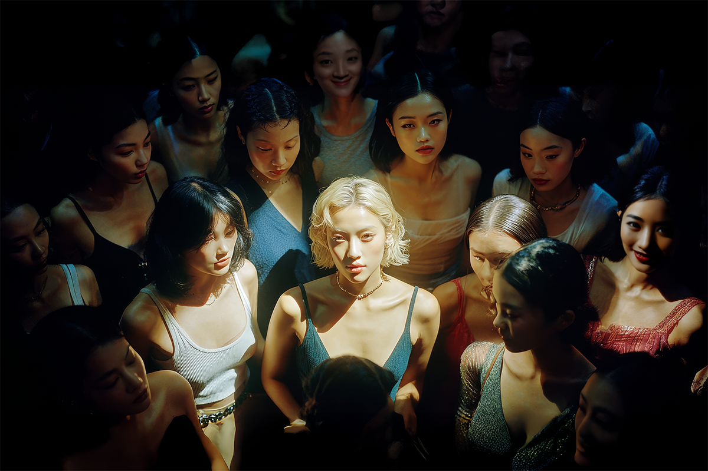
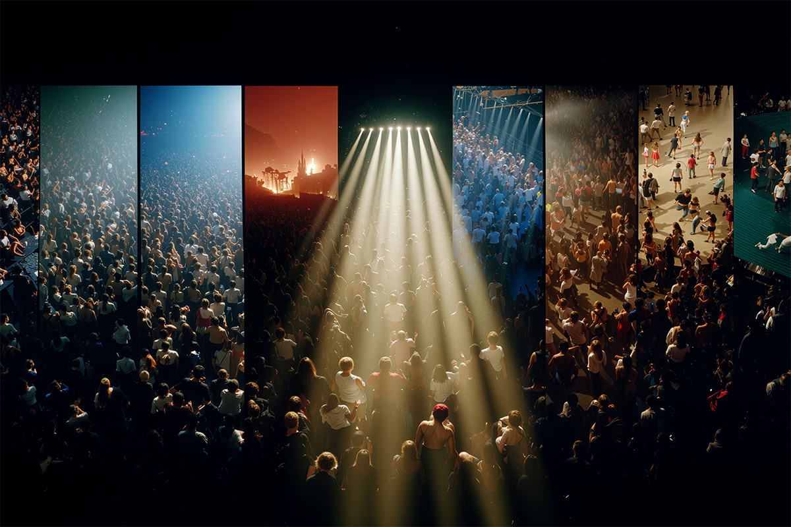

2025: El año de las pop girlies
Discos, giras y el dominio femenino del mainstream
Discos, giras y el dominio femenino del mainstream

Se nos va (volando) un nuevo año, y las listas y resúmenes musicales se toman todos los portales, incluyéndonos a nosotros.
Si bien esta vez no nos dedicaremos a hacer alguna lista específica y numerada de mayor o menor, sí estaremos indagando en algunos de los trabajos y highlights que muchas de las artistas pop del momento han consolidado este año, ya sea por nuevos álbumes o también por su reinvención artística.
Así que afírmense, porque en Compara les dejamos a algunas de las pop girlies que realmente cimentaron su 2025 a punta de buena música y estupendas estrategias de marketing.

La integrante de BLACKPINK tuvo un arrollador debut solista con su álbum Ruby. La crítica, pero sobre todo el público, se rindió ante este álbum, bastante ambicioso, ecléctico en sus sonidos pero, sobre todo, con una producción de primera y mucha cabeza tras cada uno de los tracks.
Dentro de las 15 canciones del disco, llamativas fueron las múltiples colaboraciones que le dieron más hype a este álbum, sobre todo porque no se trataban de nombres cualquiera, sino que contaba con una variedad reconocida de artistas, algunos más populares en la actualidad y otros más respetados en la industria. JENNIE tuvo como compañeros de estudio a artistas de la talla de Childish Gambino, Doechii, Dominic Fike, FKJ, Dua Lipa y Kali Uchis.
Ruby logró posicionarse dentro de los 30 mejores álbumes del año según Rolling Stone, lo más alto del K-pop, logró vender más de 1 millón de copias en su primera semana y de sus canciones se mantuvieron en el top 10 de Billboard.
Ya habíamos hablado de ella, pero no específicamente de su último álbum/mixtape, Fancy That, el que se encuentra dentro del top 10 de varias listas de los mejores álbumes del año. La crítica se sintió atraída a este trabajo, especialmente por su incursión cohesionada de distintas variantes musicales, como el drum & bass, el grunge británico y el clásico sonido Y2K con el que la cantante ya se había vuelto conocida.
Una de sus canciones principales, “Illegal” se hizo realmente popular en la primera mitad de este año, abriendo una ventana a sus seguidores, quienes ya se habían interesado muchísimo en el nuevo proyecto de la artista.
Pero uno de los acontecimientos que más se destacaron para la cantante este año, fue haber recibido un doctorado honorario en Música por la Universidad de Kent en julio, donde fue homenajeada junto a otras figuras de la música por su “contribución y logros en la música en la era digital”, reconociendo su impacto artístico y cultural.

De ser una artista más de nicho a una cuya voz puede ser reconocida en todas las listas sin siquiera saber necesariamente su nombre.
Olivia Dean lanzó su segundo álbum de estudio durante la segunda mitad de este año y, hacerlo, le valió el reconocimiento de la Academia, por la cual fue nominada por primera vez a los prestigiosos premios Grammy en la categoría “Mejor Artista Nuevo”.
Su tono de voz, cálido y suave, combinado con sus elecciones de estilo y de géneros musicales ligados al soul y al R&B, han hecho de esta joven artista una prominente figura de la música actual, llegando incluso a la cima de los charts en su natal Inglaterra.
Ahora, la cantante anunció una gira llamada The Art of Loving Live con la que ya ha agotado Arenas en Gran Bretaña.
Después de años sin noticias musicales de la española, Rosalía decidió lanzar Lux, su cuarto trabajo de estudio y el que es, para muchos, el álbum del año.
El lanzamiento de este nuevo álbum marcó un nuevo hito en la carrera de Rosalía. Lux se trata de un proyecto ambicioso que fusiona pop, música clásica, art pop y elementos experimentales y que fue grabado con la London Symphonic Orchestra, además de haber contado con las colaboraciones de artistas como Björk y Yves Tumor.
Pero no solo eso, este trabajo debutó en el #4 del Billboard 200, convirtiéndose en el primer álbum de la cantante en entrar en el top 10 de la lista estadounidense. Otro hito importante se logró en las plataformas digitales, donde Lux rompió el récord de mayor número de reproducciones en un solo día para un álbum de una artista de habla hispana en Spotify, con más de 42 millones de streams en 24 horas.
Ahora la Rosalía se va de gira por el mundo, incluyendo varias fechas en Norteamérica, Europa y Latinoamérica.

Si hablamos de un revival para ser estudiado, es el de la sueca Zara Larsson. El año pasado, después de que un meme de su canción “Symphony” junto a unos coloridos delfines se tomara las redes sociales, la artista tomó control sobre esa estética, aprovechando el hype orgánico que se fortaleció online gracias a este single del 2017.
Con este renacimiento, Larsson volvió a posicionarse con su increíble voz en los charts, esto gracias al single “Midnight Sun", canción que fue parte de un álbum del mismo nombre y que acumuló casi 4 millones de streams en su primer día en Spotify,
En otra esfera, algo que llamó la atención de este regreso fue su maquillaje. Lejos del “clean look” dominante en redes, la cantante apostó por una estética colorida, brillante y experimental, con uso de glitter y detalles gráficos que dialogan directamente con su concepto visual y puesta en escena. Ahora, referentes de las redes están volviendo a tomar como inspiración a Zara para dar vida a un nuevo tipo de tendencia en maquillaje.
Durante 2025, las chicas de KATSEYE vivieron su año de consolidación definitiva, pasando de promesa global a fenómeno pop transversal. Con el lanzamiento de su segundo EP Beautiful Chaos, el grupo logró ampliar su identidad sonora y visual, alcanzando nuevas audiencias. Singles como Gnarly y Gabriela (estoy segura de que las has escuchado) marcaron un punto de inflexión, entrando por primera vez a rankings globales y posicionándose con fuerza en plataformas de streaming, donde el grupo superó las decenas de millones de oyentes mensuales.
Más allá de los charts, el 2025 fue el año en que KATSEYE dominó los rincones digitales. Su música se convirtió en banda sonora recurrente de TikTok, acumulando miles de millones de visualizaciones. Este impacto les valió reconocimientos internacionales y las posicionó como uno de los actos más influyentes del año en términos de alcance y engagement global.
KATSEYE fue parte de festivales masivos, realizó presentaciones televisadas, han sido nominadas a dos premios Grammy y además cerraron el año con su primera gira internacional, consolidando una base de fans sólida y transversal.

Desde la escena más alternativa, llegó la siempre distintiva propuesta de FKA Twigs con su álbum Eusexua, el que debe ser uno de sus trabajos más aclamados por la crítica profesional. Tanto así, que también está nominada a los premios de la Academia.
Eusexua es su primer álbum de estudio en cinco años, consolidando una nueva etapa sonora ligada a la electrónica, el club pop y la experimentación corporal, rasgo que siempre ha caracterizado su propuesta artística.
Pero no es todo, porque en noviembre de este año lanzó Eusexua Afterglow, un proyecto complementario que amplió el universo del álbum, reafirmando su lugar como una de las artistas más innovadoras y conceptuales del pop contemporáneo.
Si siguieramos adhiriendo a más artistas que la rompieron este año, no acabaríamos nunca, pero le daremos una mención honrosa a Adison Rae, Sabrina Carpenter, Tate McRae, Lady Gaga, Taylor Swift, Ethel Cain, Florence & The Machine, Lisa y Tyla. ¿A quién más agregarías a la lista?
 Cultura
CulturaSé que suena raro hablar de calor extremo mientras en Chile todos están buscando la parka más gruesa del clóset.
 Cultura
CulturaEl hecho de que estemos entrando al mes de julio no se puede creer. Pero lo que tampoco se puede creer es la cantidad de artistas que han…
 Cultura
CulturaCuando hablamos de trabajos clásicos de la música chilena, siempre se nombran los discos de Violeta Parra, Víctor Jara, Los Jaivas o…